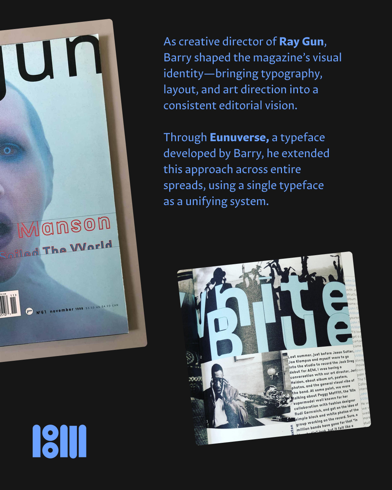
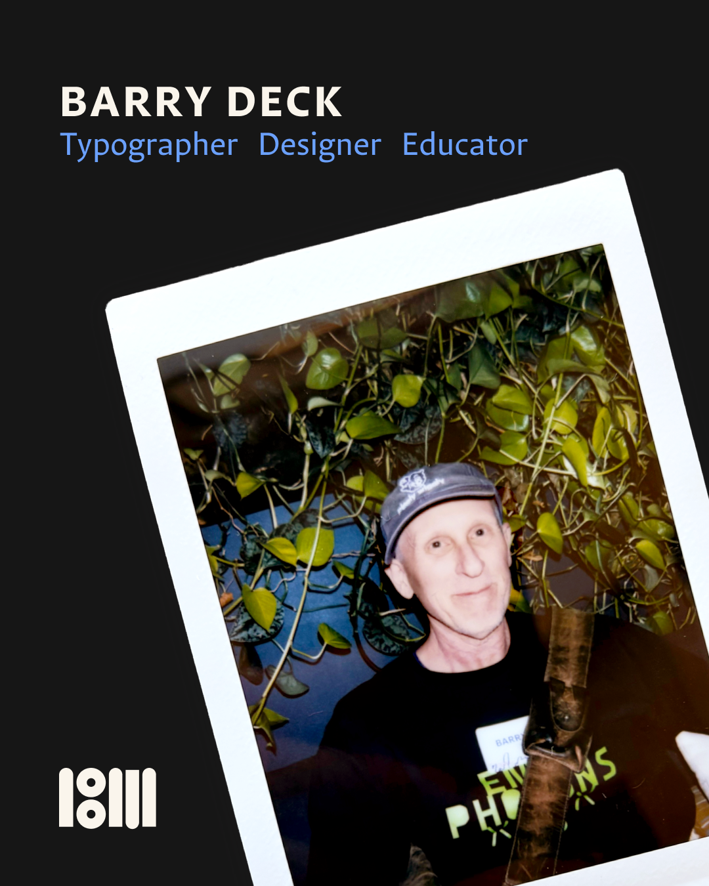
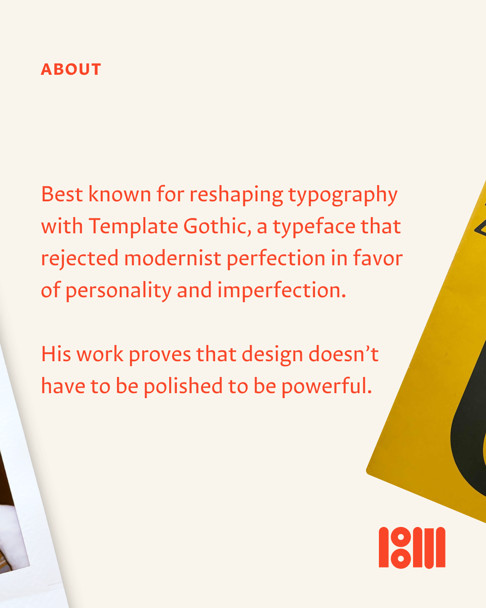
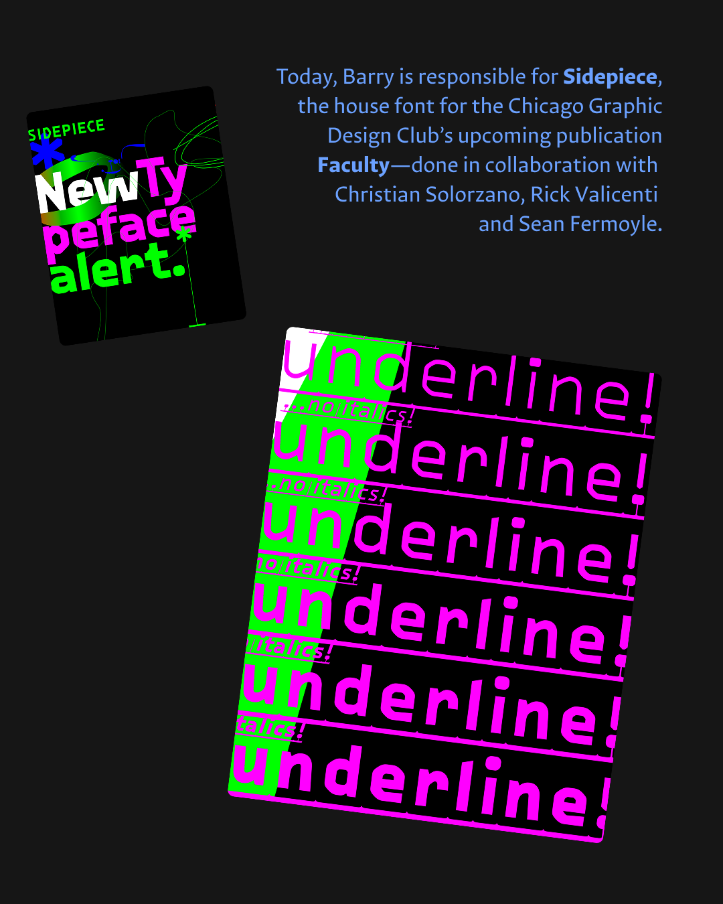
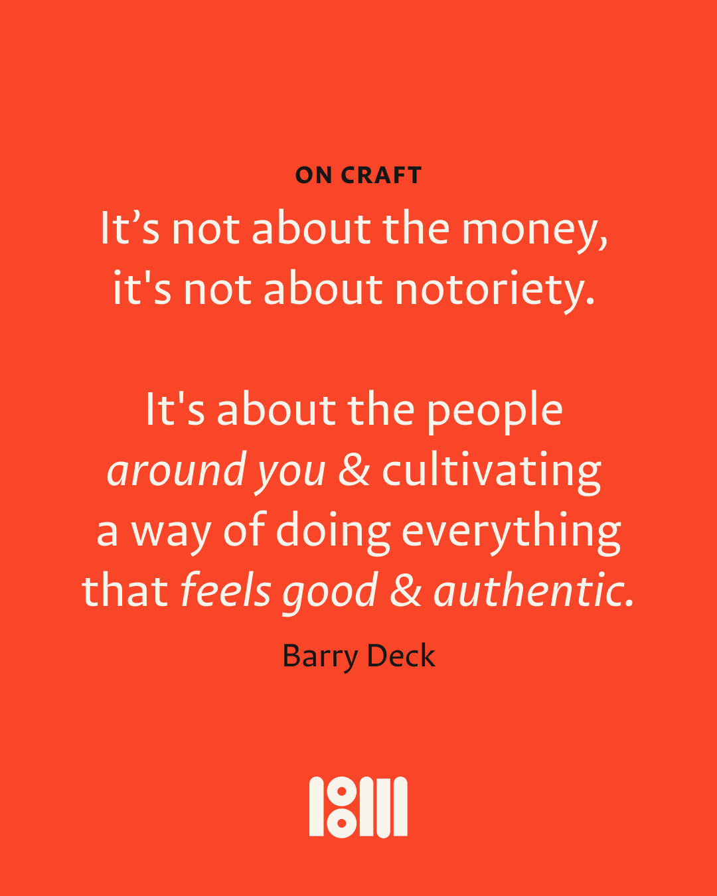

···
1/0
2 hours ago

View ↗
View ↗


A budgeting app that turns every purchase into a quick gut-check: was this a want or a need? Mindful Spending makes budgeting feel less like punishment and more like a habit.
Most budgeting apps tell you what you spent — after it's already gone. They're great at accounting and terrible at intervention. The moment that actually matters, the one right before you tap "buy," gets no attention at all.
Move the reflection to the point of purchase. Log a buy in seconds, label it want vs. need, and capture how it felt. Over time those tiny moments roll up into spending patterns, category breakdowns, and a budget that adjusts to real behavior.
Amount, product, store, count — a friction-light form so logging never feels like a chore.
A single forced choice plus an optional mood reflection turns spending into a self-aware moment.
Spending history, weekly/monthly statements, and category breakdowns surface where money really goes.
Set category budgets, save wants for later, and check for a better price before committing.
Park impulse buys on a list and revisit them — most "wants" quietly disappear after a week.
A live over/under card keeps the monthly target visible without burying it in menus.
Log a purchase, call it a want or a need, reflect on how it felt — and watch it land at the top of your spending. Go ahead, click through it.
Tap "Log A Purchase" → fill it in → choose want or need → reflect → see it land in your history. The want path asks more.
Rebuilt from the original flows — same visual language, tightened spacing, type, and hierarchy.
Coral anchors the brand and flags wants and overspend; green signals needs and healthy habits. The pink, yellow, blue and periwinkle code the five home paths and every chart category. A near-black dark surface carries the home menu and budget cards, while the stacked bowl mark keeps it friendly.
The redesign keeps the original's friendly character while sharpening the moments that drive the habit loop: a faster capture form, a clearer want/need decision, and a spending dashboard you can read at a glance.
Barcode-scan price matching, shared household budgets, and a weekly "wants you skipped" recap that turns restraint into a visible, satisfying number.
Hello! I'm Tori, a recent graduate of Loyola University Chicago with a bachelor's in Visual Communications and Psychology. I'm a narrative-driven designer who believes the most powerful work happens at the intersection of emotion and craft — where a viewer doesn't just see a design, but feels it.
My background in both disciplines shapes how I approach every project: with curiosity about the human experience and a genuine care for how design can reflect it. I love making work that's vulnerable, purposeful, and honest — using design as a way to tell stories and build real connections.
My experience spans photography, type design, book-making, branding, illustration, and UX/UI. Whether I'm designing a zine, a typeface, or an app, I bring the same commitment: to make work that actually means something.